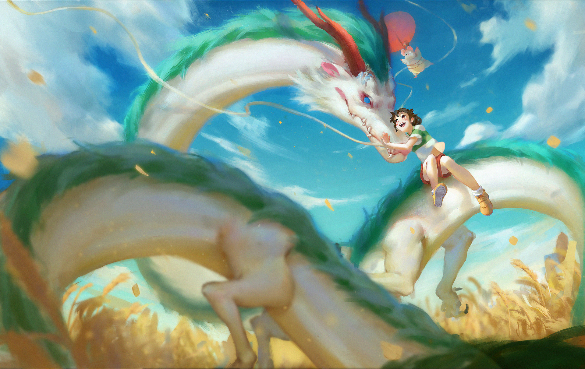
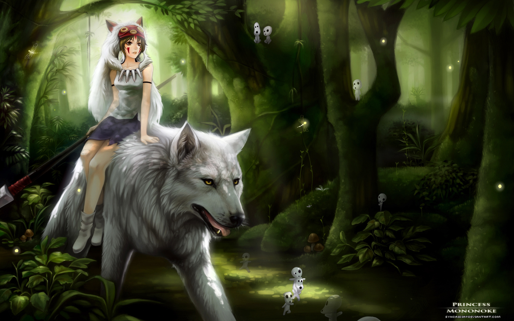
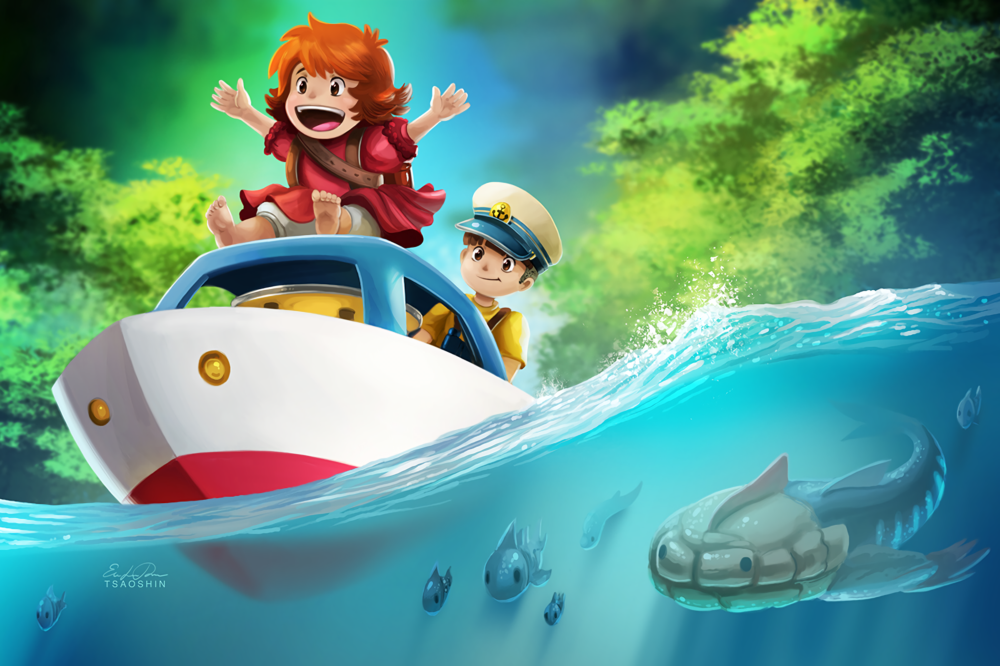
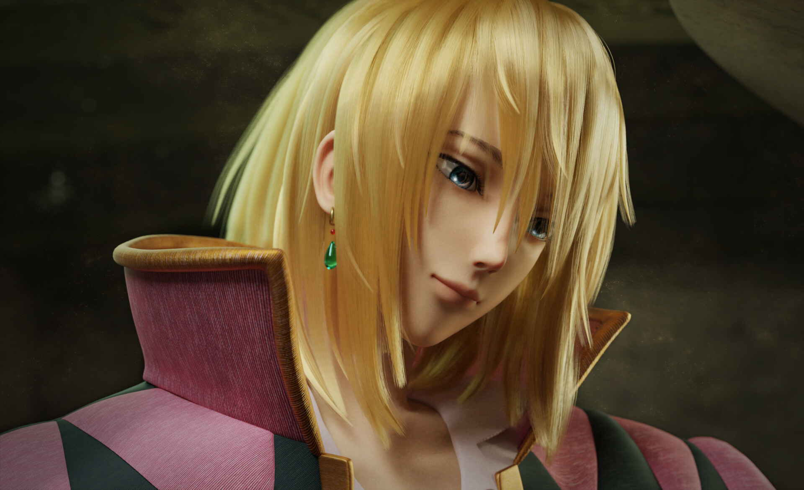

"Astronaut" technically applies to all human space travelers regardless of nationality.
However, astronauts fielded by Russia or the Soviet Union are typically known instead as cosmonauts (from the Russian "kosmos" (космос), meaning "space", also borrowed from Greek).
Дасгал 5
Дасгал 6
Space
Дасгал 7
Япон загас
Далайн эргийн амралт
Усан гахай
Дасгал 8
Ghibli студийн бүтээлүүд

Spirited away

Mononoke Hime

Gake no Ue no Ponyo

Howl's movie castleMy neighbour is Totoro